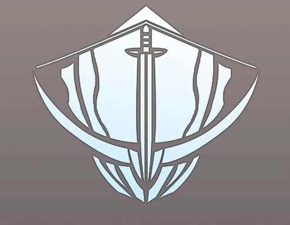

Guilda de Caçadores Ahjin:
É a guilda inicialmente liderada por Cha Hae-In e seu pai, Cha Jin-Cheol. Esta guilda é uma das mais poderosas e prestigiadas da Coreia do Sul.
Hunters Guild:
Uma guilda mais pequena que entra em conflito com Jin-Woo em certos momentos da história.